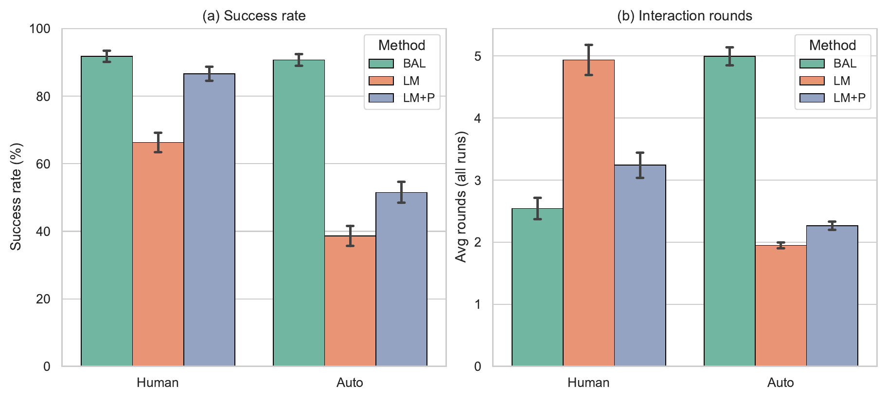
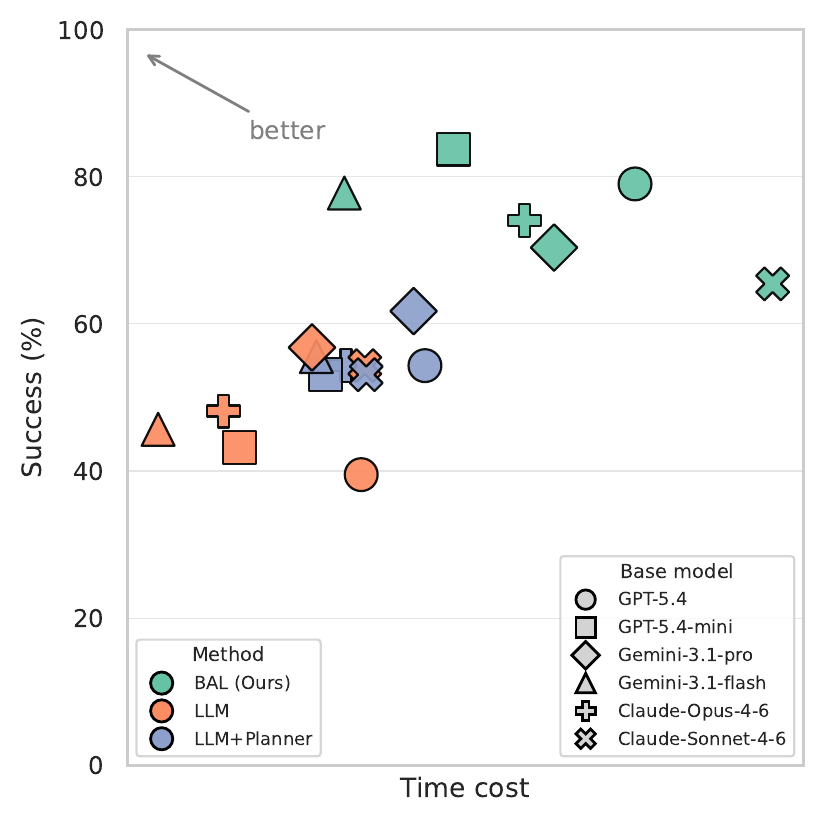
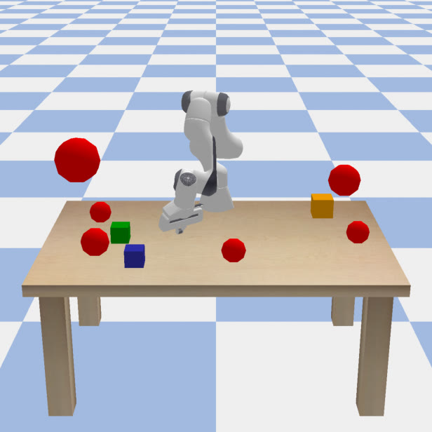
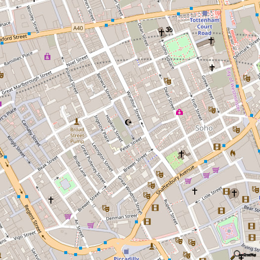
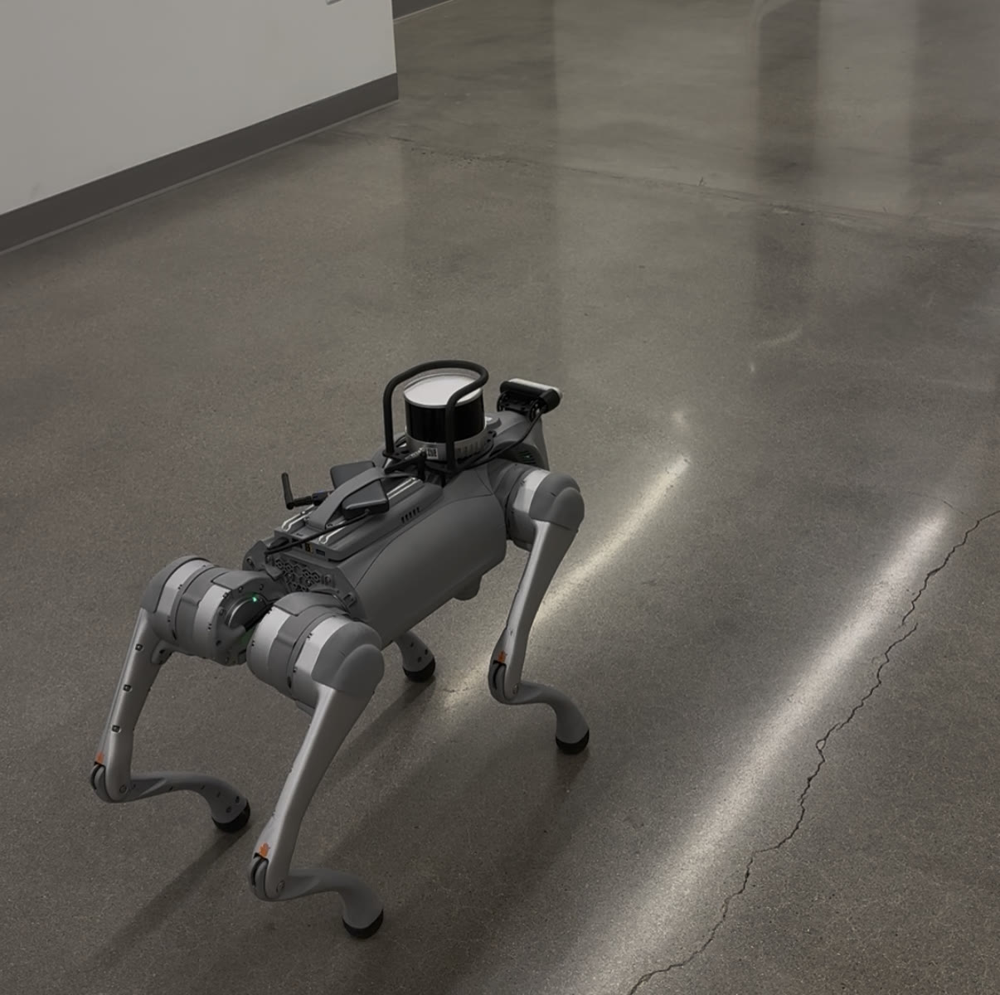
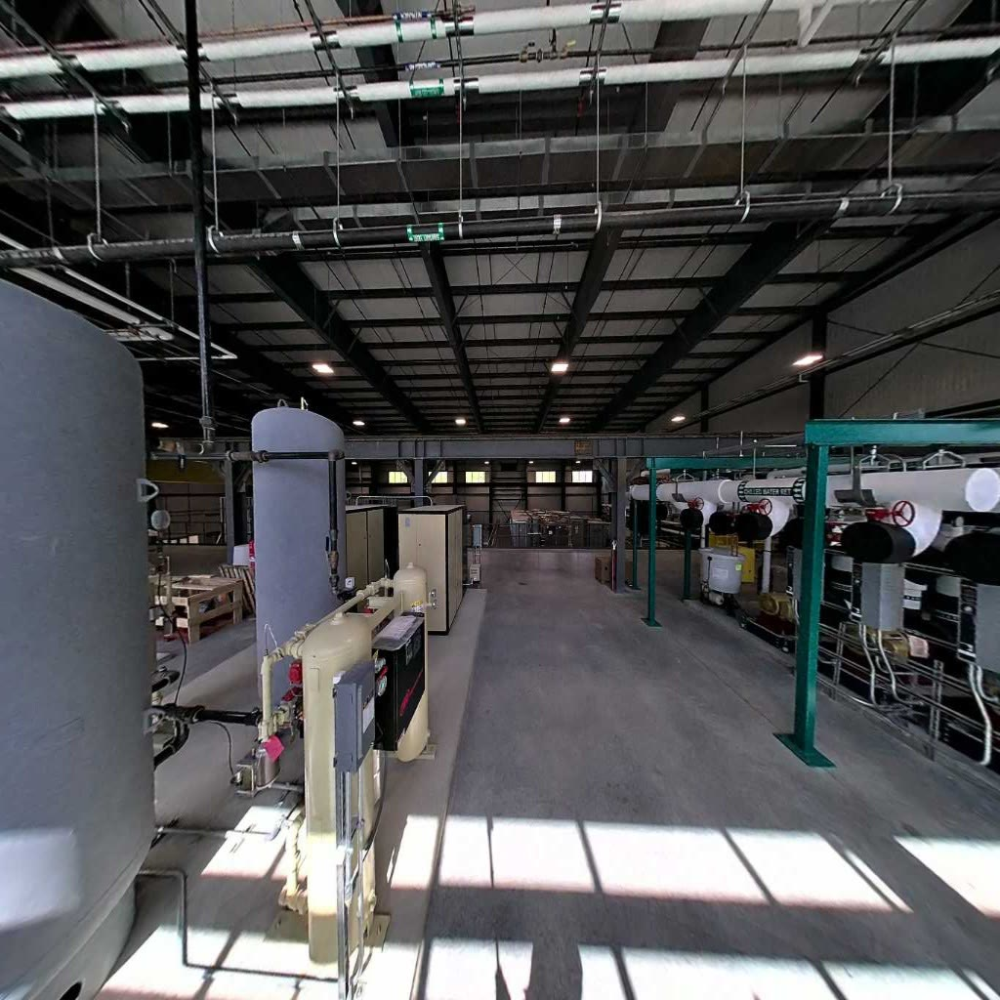

Interactive robot planning requires robots to infer and execute human intentions from natural language instructions that are often ambiguous, incomplete, or underspecified. Although large language models (LLMs) provide a powerful interface for clarification, relying on the generative model to drive a multi-turn conversation can introduce systematic failures. We propose a Bayesian framework that treats clarification as an active learning problem over grounded Signal Temporal Logic (STL) task specifications. Our method uses LLMs to initialize candidate formal specifications and translate informative contrasts into natural-language clarification questions, while Bayesian optimization maintains uncertainty estimates over user intent and selects queries that maximize information gain. Because queries are selected in a learned STL embedding space, the system can also ask about plausible specifications that the LLM did not propose. After convergence, the inferred STL specification is passed to a formal planner to synthesize a verifiable robot trajectory. Across four simulated and real-world task domains, our approach generally achieves higher task satisfaction and requires fewer clarification rounds than LLM baselines, while helping smaller models close the performance gap against larger reasoning models.
More informative questions
Casting clarification as Bayesian active learning turns dialogue into information gathering: each question is chosen to maximize expected information gain about the user's intent. BAL generally achieves higher task success with fewer clarification rounds than letting the LLM drive the conversation.
Beyond what the LLM proposes
Because queries are selected in a learned STL embedding space, the robot can ask about plausible specifications the LLM never generated, and it maintains a posterior over candidates instead of committing early to a single LLM-generated formula.
Less overconfident LLMs
LLMs tend toward overconfidence and sycophancy, which can end clarification prematurely. External uncertainty estimation gives the robot an explicit signal for when clarification is still needed.
Helps smaller models
BAL shifts much of the reasoning burden to its neuro-symbolic components: the LLM handles semantic interpretation and dialogue, while the probabilistic model and formal planner handle uncertainty, query selection, and planning. Smaller models close the gap with larger reasoning models at lower cost.
Verifiable and model-agnostic
Representing intent as grounded STL lets a formal planner verify the result. Gains are consistent across six base LLMs, are supported by a user study with real participants, and transfer to a quadruped robot in two real-world sites.
Given an ambiguous instruction such as “Go to Tom's office”, BAL maintains a posterior over which formal specification the user actually means, rather than committing to a single LLM translation.
A Unitree Go2 quadruped runs the full pipeline in two real sites that we scanned into metric-semantic maps. A MILP planner generates waypoints; MPC with a CBF-QP safety filter tracks them.
School (real world)
Indoor academic environment, Unitree Go2.
Factory (real world)
Industrial environment, Unitree Go2.
Franka Panda (simulation)
Tabletop manipulation: reach specified objects while avoiding unsafe ones.
City (simulation)
City-scale navigation over OpenStreetMap landmarks.
Success rate (%, ↑) and clarification rounds (↓), mean ± SE. The same base LLM, user proxy, and context are used for every method. LM = LLM clarification that outputs a plan directly; LM+P = LLM clarification, then translation to STL for the same planner BAL uses.
| Base model | Panda — success | City — success | ||||
|---|---|---|---|---|---|---|
| BAL | LM | LM+P | BAL | LM | LM+P | |
| GPT-5.4 | 91.1 | 48.9 | 82.2 | 62.5 | 29.2 | 20.8 |
| GPT-5.4-mini | 93.2 | 64.4 | 86.7 | 64.7 | 20.8 | 12.5 |
| Claude-Opus-4-6 | 91.1 | 64.4 | 82.2 | 50.0 | 29.2 | 20.8 |
| Claude-Sonnet-4-6 | 91.1 | 73.3 | 86.7 | 41.7 | 29.2 | 8.3 |
| Gemini-3.1-Pro | 91.1 | 82.2 | 91.1 | 54.2 | 33.3 | 25.0 |
| Gemini-3.1-Flash-Lite | 93.3 | 64.4 | 91.1 | 66.7 | 29.2 | 12.5 |
| Base model | Panda — rounds | City — rounds | ||||
|---|---|---|---|---|---|---|
| BAL | LM | LM+P | BAL | LM | LM+P | |
| GPT-5.4 | 2.33 | 6.16 | 3.51 | 6.54 | 9.14 | 9.17 |
| GPT-5.4-mini | 2.09 | 5.40 | 3.24 | 6.46 | 9.42 | 9.53 |
| Claude-Opus-4-6 | 2.93 | 4.69 | 3.38 | 7.25 | 8.75 | 8.94 |
| Claude-Sonnet-4-6 | 3.09 | 4.49 | 3.02 | 8.11 | 8.67 | 9.39 |
| Gemini-3.1-Pro | 2.36 | 3.47 | 3.16 | 7.78 | 8.83 | 9.06 |
| Gemini-3.1-Flash-Lite | 2.44 | 5.42 | 3.13 | 6.14 | 8.83 | 9.53 |

Human-approval vs. auto-stop (Panda). BAL maintains high task success under auto-stop, while LLM-based baselines terminate earlier but suffer from substantially lower success rates.

Cost vs. performance. Trade-off between time cost and performance. BAL works best with smaller models near the top-left corner.
| Method | Success ↑ | Rounds ↓ |
|---|---|---|
| BAL | 0.65 ± 0.07 | 3.67 ± 0.21 |
| LM | 0.48 ± 0.07 | 4.38 ± 0.14 |
| LM+P | 0.37 ± 0.06 | 4.25 ± 0.15 |
Within-subject, Latin-square counterbalanced. Repeated-measures ANOVA: success F(2,58)=6.10, p=.004; rounds F(2,58)=8.78, p=.001.
| Site | Metric | BAL | LM | LM+P |
|---|---|---|---|---|
| School | Success % | 90 | 60 | 80 |
| Rounds | 3.5 | 6.3 | 3.5 | |
| Factory | Success % | 90 | 80 | 90 |
| Rounds | 2.9 | 4.3 | 4.1 |
10 ambiguous instructions per site, Gemini-3.1-Flash-Lite, budget B=10. All approved tasks executed with zero collisions.

Franka Panda: 7-DoF tabletop manipulation (sim)

City: OpenStreetMap navigation, 40 landmarks (sim)

School: indoor academic site (real)

Factory: industrial site (real)
@inproceedings{li2026bal,
title = {Bayesian Active Learning for Intent Disambiguation in Interactive Robot Planning},
author = {Li, Huao and Sobolewski, Carson and Saravanos, Augustinos and Tan, William and Karigiannis, John and Fan, Chuchu},
booktitle = {Conference on Robot Learning (CoRL)},
year = {2026}
}